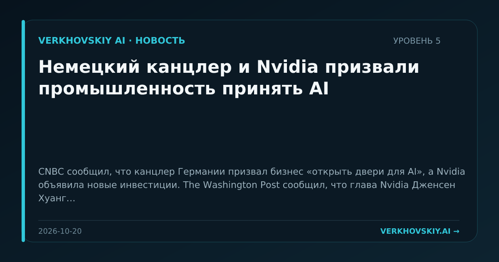

Немецкий канцлер и Nvidia призвали промышленность принять AI
CNBC сообщил, что канцлер Германии призвал бизнес «открыть двери для AI», а Nvidia объявила новые инвестиции. The Washington Post сообщил, что глава Nvidia Дженсен Хуанг призвал немецких производителей внедрять AI и заявил, что цифровые технологии не заменят тяжёлую промышленность. Почему это важно: AI позиционируется не как замена промышленности, а как слой модернизации производственных отраслей. Это связывает модельные компании и производителей оборудования с национальной промышленной политикой.